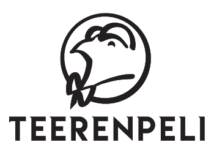
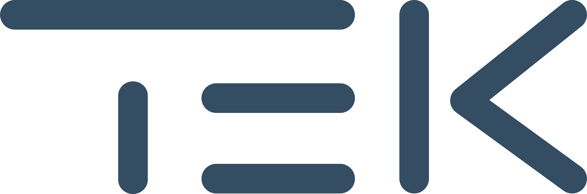

ATK-YTP saapuu Jyväskylään! ATK-yhteistoimintapäivät, eli ATK-YTP, järjestetään tänä syksynä 16.-18.10.2024 Jyväskylässä. Tämä kaksipäiväinen seminaaritapahtuma, joka on Tietotekniikan opiskelijoiden liiton (TiTOL) järjestämä, kokoaa vuosittain yhteen IT-alan opiskelijoita seitsemästä eri yliopistokaupungista. Vuoden 2024 ATK-YTP isäntinä toimivat Jyväskylän yliopiston ainejärjestöt Linkki, Dumppi ja Ynnä.
Yhteistoimintapäivät tarjoavat alan opiskelijoille ympäri Suomen mahdollisuuden tutustua toisiinsa sekä alan yrityksiin hauskalla tavalla. Tapahtumassa useat alan ammattilaiset pitävät vaikuttavia luentoja kahtena seminaaripäivänä. Luennot järjestetään Mattilanniemen kampuksella Agora-rakennuksessa Aud1-salissa 16. ja 17. lokakuuta klo 10-16, ja sen jälkeen voit verkostoitua iltaohjelman parissa. Lisäksi TiTOL pitää tapahtuman aikana syysliittokokouksensa. Tervetuloa Jyväskylään!
🌴 zyn zyn zyn 🌴
❔ Mitä mukaan?
Kuumia matkatipsejä voit kysellä myös Telegram-ryhmän puolella.
💤 Majoitus
...
🍴 Ruoka
Pitää syödä, jotta jaksaa juoda. Majoitusta lähellä palvelee etenkin Seminaarinmäen opiskelijaravintolat Taide, Lozzi ja Ilokivi ja luentojen aikana Mattilanniemen opiskelijaravintolat Piato sekä Maija.
Kampusravintoloista löydät infoa täältä: Jyväskylän opiskelijaravintolat
Jyväskylän keskustasta löytyy myös useita opiskelija-alennuksia tarjoavia ravintoloita. Kiperään iltanälkään ratkaisun voi löytää vaikka Teerenpelin sulamista tai ranuista.
🚶 Liikkuminen
Jos Oulu tai Kuopio kauhistutti; ei hätää! Jyväskylässä kaikki on lähellä. Kampuksen, majoituksen ja keskustan välejä mennään ylä- tai alamäkeen suunnasta riippuen, mutta kyllä käpistelijänkin jalat kantaa.
Yleisesti kaikki tapahtumapaikat sijaitsevat kävelymatkan päässä, mutta tarvittaessa siirtymiä voi hoitaa myös bussilla, taksilla tai pitkin kadunvarsia lojuvilla skuuteilla.
👾 Rastikierrokset
Ei yhteistoimintaa ilman rastikierroksia!
...
🥤 Etkot
Sekä keskiviikkona että torstaina järjestetään yhteiset etkot Aalto-salissa aivan Jyväskylän keskustassa! Jyväskylän tiivis kaupunkirakenne säästää meidät puuduttavilta bussikyydityksiltä. Majoitukselta etkoille pääset pätevästi kävellen! Etkoilla toimitaan OPM-periaattein eli omat juomat ja eväät matkaan!
Ensimmäisen illan etkoja tukee kaikille tuttu ja rakas TEK.
Etkoherkut saat helposti useista lähiympäristön kaupoista. Läheinen S-Market Kolmikulma palvelee klo 23.00 asti.
✨ Jatkot
Keskiviikkona jatkot tarjoaa Aalto-salia vastapäätä sijaitseva Club Escape, jossa biletunnelmaan pääsee Pyrythekidin riimien saattelemana. Keikka alkaa noin klo ??.??.
Torstaina jatkot järjestetään vain pari askelta kauempana sijaitsevassa yökerho Londonissa.
Ke 16.10.
| Klo | Ohjelma |
|---|---|
| 08:00 | Majoitus aukeaa |
| 10:00 | Majoitus sulkeutuu |
| 10:30 | Järjestäjät, TDK & TiTOL |
| 12:00 | Akamon |
| 13:00 | Ceili |
| 13:00 | TiTOL liittokokous |
| 14:00 | TEK |
| 1?:00 | Rastikierros |
| 1?:00 | Etkot by TEK |
| ??:00 | Majoitus aukeaa |
| ??:00 | Jatkot Club Escapessa |
| ??:00 | Pyrythekid |
To 17.10.
| Klo | Ohjelma |
|---|---|
| 08:00 | Aamusauna |
| 11:00 | Majoitus sulkeutuu |
| 10:30 | Prof. Teiko Heinosaari |
| 12:00 | ?? |
| 13:00 | Tivia |
| 14:00 | Netum |
| 1?:00 | Rastikierros |
| 1?:00 | Etkot |
| ??:00 | Majoitus aukeaa |
| ??:00 | Jatkot Londonissa |
Pe 18.10.
| Klo | Ohjelma |
|---|---|
| 11:00 | Majoitus sulkeutuu |
Mitä ehmettiä täällä oikein tapahtuu? No klikkaileppa tästä vastauksia polttavimpiin kysymyksiin.
Suomen Ateena. Keski-Suomen helmi. Tänne, ah, tänne on kaipaus kerta; täällä on kaikki mi kallista on!
Jyväskylässä vallitsee jännittävä ja poikkeuksellinen TiTOL-järjestöjen triumviraatti.
Linkki on tietotekniikan, tietojenkäsittelytieteen ja koulutusteknologian pääaine-, sivuaine- sekä jatko-opiskelijoiden ainejärjestö.
Dumppi on pääaineenaan tietojärjestelmätiedettä, kyberturvallisuutta, kognitiotiedettä sekä turvallisuutta ja strategista analyysia opiskelevien ainejärjestö.
Ynnä on fysiikan, matematiikan, tilastotieteen ja tietotekniikan opiskelijoiden ainejärjestö.
On.


